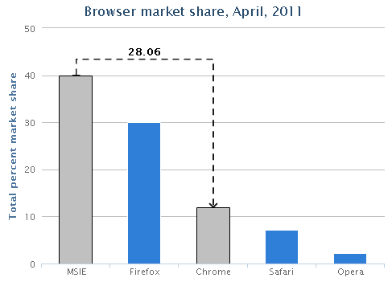

两点的差值连接线
话说图形我们一般用于了解趋势, 快速定位问题所在, 但想要对数值进行精确评估, 还是直白的表格 + 数字好了.
但这样问题就来了, 如果我们既想了解趋势, 又想了解具体数值的差异, 那该怎么办呢?
是用柱状图 + 表格吗?
我觉得还是这样的好! 让用户选择图形上的点, 自动比较两点的差值, 给用户最直观的感受.

想法有了, 不知道是不是有人做过这样的东西. 搜索一番后, 貌似没有发现, 也可能是我孤陋寡闻吧, 看来只能自己写一个了
图形我就不自己写了, 已经有做的非常好的, 例如Highcharts
那么我来扩展下Highcharts, 做一个plugin好了...
于是between-points诞生了
通过点击Highcharts X-Y轴系列图形(如line, area, column, bar)上的点来获取差值, 以连接线的形式来展现他们的关系.
<!doctype html>
<html lang="en">
<head>
<title>基于Highcharts绘制差值连接线的示例</title>
<meta charset="UTF-8">
<meta name="viewport" content="width=device-width, initial-scale=1.0, maximum-scale=1.0">
<style>
.example {
height: 400px;
margin: 0 auto;
}
</style>
</head>
<body>
<h1>基于Highcharts绘制差值连接线的示例</h1>
<h2>column chart example</h2>
<div id="column-example" class="example"></div>
<script src="http://lib.sinaapp.com/js/jquery/1.8.2/jquery.min.js"></script>
<script src="http://code.highcharts.com/highcharts.js"></script>
<script src="https://rawgithub.com/ufologist/between-points/master/highcharts.between-points.js"></script>
<script>
var betweenPoints = new Highcharts.BetweenPoints();
$('#column-example').highcharts({
chart: {
type: 'column'
},
title: {
text: 'Browser market share, April, 2011'
},
xAxis: {
categories: ['MSIE', 'Firefox', 'Chrome', 'Safari', 'Opera']
},
yAxis: {
title: {
text: 'Total percent market share'
}
},
plotOptions: {
column: {
cursor: 'pointer',
point: {
events: {
click: function(event) {
betweenPoints.between(this);
}
}
}
}
},
series: [{
name: 'Browser brands',
data: [40, 30, 11.94, 7.15, 2.14]
}]
});
</script>
</body>
</html>
// 1. 选择一种画差值线的模式(竖向和横向)
var direction = ['portrait', 'landscape'];
// 2. 可选配置项(这里列举的都是默认值)
var options = {
higherPointOffset: 20, // 最高点延长线的偏移量
textOffset: 5, // 差值文本的偏移量
decimalDigits: 2, // 差值需要保留的小数位
directionDecorationOffset: 5, // 绘制方向装饰物的偏移量
lineAttr: { // 连接线(包括方向装饰物)的属性
'stroke-width': 2,
stroke: 'black',
dashstyle: 'dash',
opacity: 0.9
},
lineCss: {}, // 连接线(包括方向装饰物)的样式
textAttr: {}, // 差值文本的属性
textCss: { // 差值文本的样式
'font-weight': 'bold'
}
};
// 3. 新建实例
var betweenPoints = new Highcharts.BetweenPoints(direction[1], options);
// 4. 一般在图形plotOptions的click方法中调用between即可
betweenPoints.between(this);